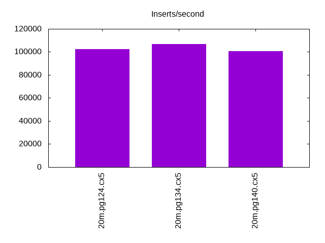
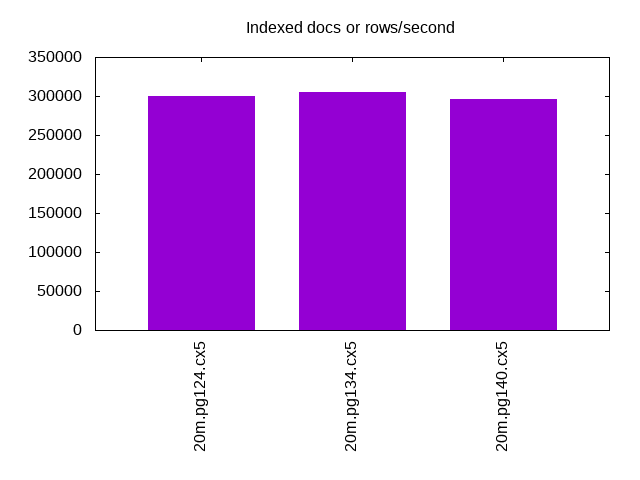
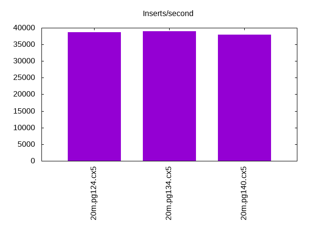
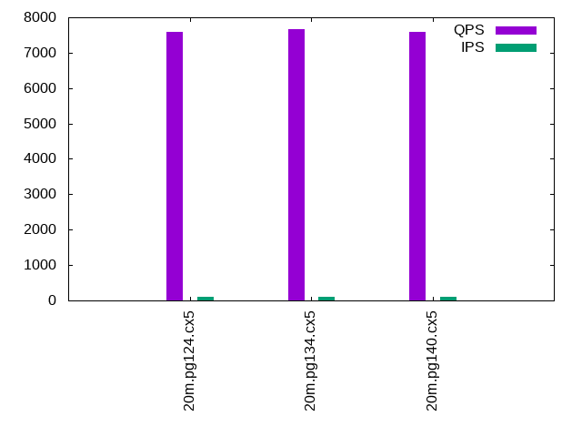
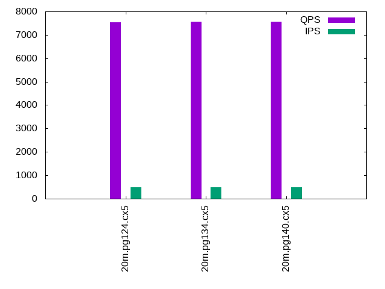
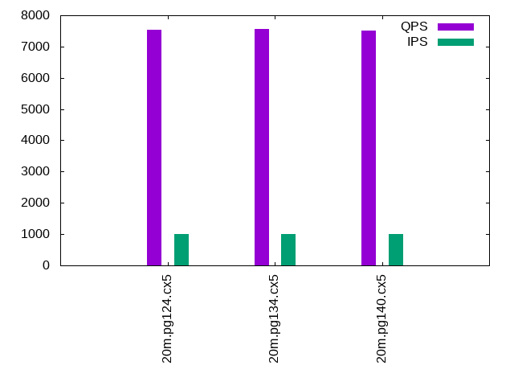

This is a report for the insert benchmark with 20M docs and 1 client(s). It is generated by scripts (bash, awk, sed) and Tufte might not be impressed. An overview of the insert benchmark is here and a short update is here. Below, by DBMS, I mean DBMS+version.config. An example is my8020.c10b40 where my means MySQL, 8020 is version 8.0.20 and c10b40 is the name for the configuration file.
The test server is an Intel NUC with 4 cores, 16G RAM and a Samsung 970 EVO. More details are here. Clients and the DBMS share one server. The per-database configs are in the per-database subdirectories here.
The tested DBMS are:
The numbers are inserts/s for l.i0 and l.i1, indexed docs (or rows) /s for l.x and queries/s for q*.2. The values are the average rate over the entire test for inserts (IPS) and queries (QPS). The range of values for IPS and QPS is split into 3 parts: bottom 25%, middle 50%, top 25%. Values in the bottom 25% have a red background, values in the top 25% have a green background and values in the middle have no color. A gray background is used for values that can be ignored because the DBMS did not sustain the target insert rate. Red backgrounds are not used when the minimum value is within 80% of the max value.
| dbms | l.i0 | l.x | l.i1 | q100.1 | q500.1 | q1000.1 |
|---|---|---|---|---|---|---|
| 20m.pg124.cx5 | 102564 | 300000 | 38685 | 7591 | 7525 | 7534 |
| 20m.pg134.cx5 | 106952 | 304545 | 38986 | 7662 | 7572 | 7555 |
| 20m.pg140.cx5 | 100502 | 295588 | 37879 | 7581 | 7559 | 7510 |
This lists the average rate of inserts/s for the tests that do inserts concurrent with queries. For such tests the query rate is listed in the table above. The read+write tests are setup so that the insert rate should match the target rate every second. Cells that are not at least 95% of the target have a red background to indicate a failure to satisfy the target.
| dbms | q100.1 | q500.1 | q1000.1 |
|---|---|---|---|
| pg124.cx5 | 100 | 500 | 999 |
| pg134.cx5 | 100 | 499 | 999 |
| pg140.cx5 | 100 | 499 | 999 |
| target | 100 | 500 | 1000 |
l.i0: load without secondary indexes. Graphs for performance per 1-second interval are here.
Average throughput:
Insert response time histogram: each cell has the percentage of responses that take <= the time in the header and max is the max response time in seconds. For the max column values in the top 25% of the range have a red background and in the bottom 25% of the range have a green background. The red background is not used when the min value is within 80% of the max value.
| dbms | 256us | 1ms | 4ms | 16ms | 64ms | 256ms | 1s | 4s | 16s | gt | max |
|---|---|---|---|---|---|---|---|---|---|---|---|
| pg124.cx5 | 91.436 | 8.563 | 0.003 | ||||||||
| pg134.cx5 | 98.272 | 1.728 | 0.002 | ||||||||
| pg140.cx5 | 79.843 | 20.156 | 0.002 | 0.004 |
Performance metrics for the DBMS listed above. Some are normalized by throughput, others are not. Legend for results is here.
ips qps rps rmbps wps wmbps rpq rkbpq wpi wkbpi csps cpups cspq cpupq dbgb1 dbgb2 rss maxop p50 p99 tag 102564 0 0 0.0 77.3 44.0 0.000 0.000 0.001 0.439 12511 42.3 0.122 16 1.9 5.2 0.0 0.003 102788 81750 20m.pg124.cx5 106952 0 0 0.0 70.3 44.7 0.000 0.000 0.001 0.428 12962 43.8 0.121 16 1.9 5.2 0.0 0.002 107586 86108 20m.pg134.cx5 100502 0 0 0.0 67.2 42.8 0.000 0.000 0.001 0.437 12260 44.8 0.122 18 1.9 5.2 0.0 0.004 100929 81111 20m.pg140.cx5
l.x: create secondary indexes.
Average throughput:
Performance metrics for the DBMS listed above. Some are normalized by throughput, others are not. Legend for results is here.
ips qps rps rmbps wps wmbps rpq rkbpq wpi wkbpi csps cpups cspq cpupq dbgb1 dbgb2 rss maxop p50 p99 tag 300000 0 0 0.0 60.0 62.3 0.000 0.000 0.000 0.213 1970 24.4 0.007 3 3.7 8.6 0.0 0.002 NA NA 20m.pg124.cx5 304545 0 0 0.0 68.0 69.3 0.000 0.000 0.000 0.233 2006 24.3 0.007 3 3.7 8.6 0.0 0.002 NA NA 20m.pg134.cx5 295588 0 0 0.0 54.4 57.2 0.000 0.000 0.000 0.198 1786 24.5 0.006 3 3.7 8.6 0.0 0.002 NA NA 20m.pg140.cx5
l.i1: continue load after secondary indexes created. Graphs for performance per 1-second interval are here.
Average throughput:
Insert response time histogram: each cell has the percentage of responses that take <= the time in the header and max is the max response time in seconds. For the max column values in the top 25% of the range have a red background and in the bottom 25% of the range have a green background. The red background is not used when the min value is within 80% of the max value.
| dbms | 256us | 1ms | 4ms | 16ms | 64ms | 256ms | 1s | 4s | 16s | gt | max |
|---|---|---|---|---|---|---|---|---|---|---|---|
| pg124.cx5 | 99.978 | 0.019 | 0.003 | 0.037 | |||||||
| pg134.cx5 | 99.831 | 0.138 | 0.029 | 0.001 | 0.001 | 0.321 | |||||
| pg140.cx5 | 99.866 | 0.105 | 0.026 | 0.002 | nonzero | 0.696 |
Performance metrics for the DBMS listed above. Some are normalized by throughput, others are not. Legend for results is here.
ips qps rps rmbps wps wmbps rpq rkbpq wpi wkbpi csps cpups cspq cpupq dbgb1 dbgb2 rss maxop p50 p99 tag 38685 0 0 0.0 207.8 66.1 0.000 0.000 0.005 1.750 9960 35.9 0.257 37 8.2 19.5 0.0 0.037 39707 26369 20m.pg124.cx5 38986 0 0 0.0 202.5 68.0 0.000 0.000 0.005 1.787 9931 35.6 0.255 37 8.2 19.9 0.0 0.321 40506 8139 20m.pg134.cx5 37879 0 0 0.0 156.3 63.9 0.000 0.000 0.004 1.726 9597 36.0 0.253 38 8.2 20.8 0.0 0.696 39558 11534 20m.pg140.cx5
q100.1: range queries with 100 insert/s per client. Graphs for performance per 1-second interval are here.
Average throughput:
Query response time histogram: each cell has the percentage of responses that take <= the time in the header and max is the max response time in seconds. For max values in the top 25% of the range have a red background and in the bottom 25% of the range have a green background. The red background is not used when the min value is within 80% of the max value.
| dbms | 256us | 1ms | 4ms | 16ms | 64ms | 256ms | 1s | 4s | 16s | gt | max |
|---|---|---|---|---|---|---|---|---|---|---|---|
| pg124.cx5 | 99.959 | 0.041 | 0.001 | nonzero | 0.007 | ||||||
| pg134.cx5 | 99.966 | 0.033 | 0.001 | nonzero | 0.004 | ||||||
| pg140.cx5 | 99.947 | 0.052 | 0.001 | 0.003 |
Insert response time histogram: each cell has the percentage of responses that take <= the time in the header and max is the max response time in seconds. For max values in the top 25% of the range have a red background and in the bottom 25% of the range have a green background. The red background is not used when the min value is within 80% of the max value.
| dbms | 256us | 1ms | 4ms | 16ms | 64ms | 256ms | 1s | 4s | 16s | gt | max |
|---|---|---|---|---|---|---|---|---|---|---|---|
| pg124.cx5 | 99.986 | 0.014 | 0.005 | ||||||||
| pg134.cx5 | 99.993 | 0.007 | 0.005 | ||||||||
| pg140.cx5 | 99.986 | 0.014 | 0.009 |
Performance metrics for the DBMS listed above. Some are normalized by throughput, others are not. Legend for results is here.
ips qps rps rmbps wps wmbps rpq rkbpq wpi wkbpi csps cpups cspq cpupq dbgb1 dbgb2 rss maxop p50 p99 tag 100 7591 0 0.0 204.6 4.6 0.000 0.000 2.048 47.351 29267 27.7 3.855 146 8.3 10.3 0.0 0.007 7592 7480 20m.pg124.cx5 100 7662 0 0.0 205.0 4.3 0.000 0.000 2.052 44.005 29552 27.8 3.857 145 8.3 10.2 0.0 0.004 7656 7544 20m.pg134.cx5 100 7581 0 0.0 196.9 4.4 0.000 0.000 1.971 44.670 29165 26.3 3.847 139 8.3 10.8 0.0 0.003 7578 7464 20m.pg140.cx5
q500.1: range queries with 500 insert/s per client. Graphs for performance per 1-second interval are here.
Average throughput:
Query response time histogram: each cell has the percentage of responses that take <= the time in the header and max is the max response time in seconds. For max values in the top 25% of the range have a red background and in the bottom 25% of the range have a green background. The red background is not used when the min value is within 80% of the max value.
| dbms | 256us | 1ms | 4ms | 16ms | 64ms | 256ms | 1s | 4s | 16s | gt | max |
|---|---|---|---|---|---|---|---|---|---|---|---|
| pg124.cx5 | 99.925 | 0.069 | 0.006 | nonzero | 0.004 | ||||||
| pg134.cx5 | 99.930 | 0.064 | 0.006 | nonzero | 0.010 | ||||||
| pg140.cx5 | 99.907 | 0.086 | 0.007 | nonzero | 0.005 |
Insert response time histogram: each cell has the percentage of responses that take <= the time in the header and max is the max response time in seconds. For max values in the top 25% of the range have a red background and in the bottom 25% of the range have a green background. The red background is not used when the min value is within 80% of the max value.
| dbms | 256us | 1ms | 4ms | 16ms | 64ms | 256ms | 1s | 4s | 16s | gt | max |
|---|---|---|---|---|---|---|---|---|---|---|---|
| pg124.cx5 | 99.986 | 0.014 | 0.010 | ||||||||
| pg134.cx5 | 99.978 | 0.022 | 0.010 | ||||||||
| pg140.cx5 | 99.981 | 0.018 | 0.001 | 0.016 |
Performance metrics for the DBMS listed above. Some are normalized by throughput, others are not. Legend for results is here.
ips qps rps rmbps wps wmbps rpq rkbpq wpi wkbpi csps cpups cspq cpupq dbgb1 dbgb2 rss maxop p50 p99 tag 500 7525 0 0.0 375.7 13.0 0.000 0.000 0.752 26.698 29120 28.2 3.870 150 9.7 12.7 0.0 0.004 7528 7384 20m.pg124.cx5 499 7572 0 0.0 377.1 13.1 0.000 0.000 0.755 26.781 29311 28.3 3.871 150 9.7 12.7 0.0 0.010 7576 7432 20m.pg134.cx5 499 7559 0 0.0 376.9 12.4 0.000 0.000 0.755 25.398 29199 26.8 3.863 142 9.7 13.3 0.0 0.005 7560 7448 20m.pg140.cx5
q1000.1: range queries with 1000 insert/s per client. Graphs for performance per 1-second interval are here.
Average throughput:
Query response time histogram: each cell has the percentage of responses that take <= the time in the header and max is the max response time in seconds. For max values in the top 25% of the range have a red background and in the bottom 25% of the range have a green background. The red background is not used when the min value is within 80% of the max value.
| dbms | 256us | 1ms | 4ms | 16ms | 64ms | 256ms | 1s | 4s | 16s | gt | max |
|---|---|---|---|---|---|---|---|---|---|---|---|
| pg124.cx5 | 99.877 | 0.109 | 0.014 | nonzero | 0.009 | ||||||
| pg134.cx5 | 99.881 | 0.105 | 0.014 | nonzero | 0.008 | ||||||
| pg140.cx5 | 99.841 | 0.144 | 0.015 | nonzero | 0.007 |
Insert response time histogram: each cell has the percentage of responses that take <= the time in the header and max is the max response time in seconds. For max values in the top 25% of the range have a red background and in the bottom 25% of the range have a green background. The red background is not used when the min value is within 80% of the max value.
| dbms | 256us | 1ms | 4ms | 16ms | 64ms | 256ms | 1s | 4s | 16s | gt | max |
|---|---|---|---|---|---|---|---|---|---|---|---|
| pg124.cx5 | 98.209 | 1.778 | 0.013 | 0.036 | |||||||
| pg134.cx5 | 98.164 | 1.810 | 0.026 | 0.035 | |||||||
| pg140.cx5 | 98.247 | 1.738 | 0.015 | 0.036 |
Performance metrics for the DBMS listed above. Some are normalized by throughput, others are not. Legend for results is here.
ips qps rps rmbps wps wmbps rpq rkbpq wpi wkbpi csps cpups cspq cpupq dbgb1 dbgb2 rss maxop p50 p99 tag 999 7534 7 0.1 485.2 18.8 0.001 0.008 0.486 19.275 29296 28.6 3.888 152 12.0 15.8 0.0 0.009 7544 7400 20m.pg124.cx5 999 7555 7 0.1 483.1 18.8 0.001 0.009 0.484 19.287 29383 28.6 3.889 151 12.0 15.8 0.0 0.008 7560 7416 20m.pg134.cx5 999 7510 7 0.1 513.2 17.5 0.001 0.008 0.514 17.941 29133 27.3 3.879 145 12.0 16.7 0.0 0.007 7512 7384 20m.pg140.cx5
l.i0: load without secondary indexes
Performance metrics for all DBMS, not just the ones listed above. Some are normalized by throughput, others are not. Legend for results is here.
ips qps rps rmbps wps wmbps rpq rkbpq wpi wkbpi csps cpups cspq cpupq dbgb1 dbgb2 rss maxop p50 p99 tag 102564 0 0 0.0 77.3 44.0 0.000 0.000 0.001 0.439 12511 42.3 0.122 16 1.9 5.2 0.0 0.003 102788 81750 20m.pg124.cx5 106952 0 0 0.0 70.3 44.7 0.000 0.000 0.001 0.428 12962 43.8 0.121 16 1.9 5.2 0.0 0.002 107586 86108 20m.pg134.cx5 100502 0 0 0.0 67.2 42.8 0.000 0.000 0.001 0.437 12260 44.8 0.122 18 1.9 5.2 0.0 0.004 100929 81111 20m.pg140.cx5
l.x: create secondary indexes
Performance metrics for all DBMS, not just the ones listed above. Some are normalized by throughput, others are not. Legend for results is here.
ips qps rps rmbps wps wmbps rpq rkbpq wpi wkbpi csps cpups cspq cpupq dbgb1 dbgb2 rss maxop p50 p99 tag 300000 0 0 0.0 60.0 62.3 0.000 0.000 0.000 0.213 1970 24.4 0.007 3 3.7 8.6 0.0 0.002 NA NA 20m.pg124.cx5 304545 0 0 0.0 68.0 69.3 0.000 0.000 0.000 0.233 2006 24.3 0.007 3 3.7 8.6 0.0 0.002 NA NA 20m.pg134.cx5 295588 0 0 0.0 54.4 57.2 0.000 0.000 0.000 0.198 1786 24.5 0.006 3 3.7 8.6 0.0 0.002 NA NA 20m.pg140.cx5
l.i1: continue load after secondary indexes created
Performance metrics for all DBMS, not just the ones listed above. Some are normalized by throughput, others are not. Legend for results is here.
ips qps rps rmbps wps wmbps rpq rkbpq wpi wkbpi csps cpups cspq cpupq dbgb1 dbgb2 rss maxop p50 p99 tag 38685 0 0 0.0 207.8 66.1 0.000 0.000 0.005 1.750 9960 35.9 0.257 37 8.2 19.5 0.0 0.037 39707 26369 20m.pg124.cx5 38986 0 0 0.0 202.5 68.0 0.000 0.000 0.005 1.787 9931 35.6 0.255 37 8.2 19.9 0.0 0.321 40506 8139 20m.pg134.cx5 37879 0 0 0.0 156.3 63.9 0.000 0.000 0.004 1.726 9597 36.0 0.253 38 8.2 20.8 0.0 0.696 39558 11534 20m.pg140.cx5
q100.1: range queries with 100 insert/s per client
Performance metrics for all DBMS, not just the ones listed above. Some are normalized by throughput, others are not. Legend for results is here.
ips qps rps rmbps wps wmbps rpq rkbpq wpi wkbpi csps cpups cspq cpupq dbgb1 dbgb2 rss maxop p50 p99 tag 100 7591 0 0.0 204.6 4.6 0.000 0.000 2.048 47.351 29267 27.7 3.855 146 8.3 10.3 0.0 0.007 7592 7480 20m.pg124.cx5 100 7662 0 0.0 205.0 4.3 0.000 0.000 2.052 44.005 29552 27.8 3.857 145 8.3 10.2 0.0 0.004 7656 7544 20m.pg134.cx5 100 7581 0 0.0 196.9 4.4 0.000 0.000 1.971 44.670 29165 26.3 3.847 139 8.3 10.8 0.0 0.003 7578 7464 20m.pg140.cx5
q500.1: range queries with 500 insert/s per client
Performance metrics for all DBMS, not just the ones listed above. Some are normalized by throughput, others are not. Legend for results is here.
ips qps rps rmbps wps wmbps rpq rkbpq wpi wkbpi csps cpups cspq cpupq dbgb1 dbgb2 rss maxop p50 p99 tag 500 7525 0 0.0 375.7 13.0 0.000 0.000 0.752 26.698 29120 28.2 3.870 150 9.7 12.7 0.0 0.004 7528 7384 20m.pg124.cx5 499 7572 0 0.0 377.1 13.1 0.000 0.000 0.755 26.781 29311 28.3 3.871 150 9.7 12.7 0.0 0.010 7576 7432 20m.pg134.cx5 499 7559 0 0.0 376.9 12.4 0.000 0.000 0.755 25.398 29199 26.8 3.863 142 9.7 13.3 0.0 0.005 7560 7448 20m.pg140.cx5
q1000.1: range queries with 1000 insert/s per client
Performance metrics for all DBMS, not just the ones listed above. Some are normalized by throughput, others are not. Legend for results is here.
ips qps rps rmbps wps wmbps rpq rkbpq wpi wkbpi csps cpups cspq cpupq dbgb1 dbgb2 rss maxop p50 p99 tag 999 7534 7 0.1 485.2 18.8 0.001 0.008 0.486 19.275 29296 28.6 3.888 152 12.0 15.8 0.0 0.009 7544 7400 20m.pg124.cx5 999 7555 7 0.1 483.1 18.8 0.001 0.009 0.484 19.287 29383 28.6 3.889 151 12.0 15.8 0.0 0.008 7560 7416 20m.pg134.cx5 999 7510 7 0.1 513.2 17.5 0.001 0.008 0.514 17.941 29133 27.3 3.879 145 12.0 16.7 0.0 0.007 7512 7384 20m.pg140.cx5
Insert response time histogram
256us 1ms 4ms 16ms 64ms 256ms 1s 4s 16s gt max tag 0.000 91.436 8.563 0.000 0.000 0.000 0.000 0.000 0.000 0.000 0.003 pg124.cx5 0.000 98.272 1.728 0.000 0.000 0.000 0.000 0.000 0.000 0.000 0.002 pg134.cx5 0.000 79.843 20.156 0.002 0.000 0.000 0.000 0.000 0.000 0.000 0.004 pg140.cx5
TODO - determine whether there is data for create index response time
Insert response time histogram
256us 1ms 4ms 16ms 64ms 256ms 1s 4s 16s gt max tag 0.000 0.000 99.978 0.019 0.003 0.000 0.000 0.000 0.000 0.000 0.037 pg124.cx5 0.000 0.000 99.831 0.138 0.029 0.001 0.001 0.000 0.000 0.000 0.321 pg134.cx5 0.000 0.000 99.866 0.105 0.026 0.002 nonzero 0.000 0.000 0.000 0.696 pg140.cx5
Query response time histogram
256us 1ms 4ms 16ms 64ms 256ms 1s 4s 16s gt max tag 99.959 0.041 0.001 nonzero 0.000 0.000 0.000 0.000 0.000 0.000 0.007 pg124.cx5 99.966 0.033 0.001 nonzero 0.000 0.000 0.000 0.000 0.000 0.000 0.004 pg134.cx5 99.947 0.052 0.001 0.000 0.000 0.000 0.000 0.000 0.000 0.000 0.003 pg140.cx5
Insert response time histogram
256us 1ms 4ms 16ms 64ms 256ms 1s 4s 16s gt max tag 0.000 0.000 99.986 0.014 0.000 0.000 0.000 0.000 0.000 0.000 0.005 pg124.cx5 0.000 0.000 99.993 0.007 0.000 0.000 0.000 0.000 0.000 0.000 0.005 pg134.cx5 0.000 0.000 99.986 0.014 0.000 0.000 0.000 0.000 0.000 0.000 0.009 pg140.cx5
Query response time histogram
256us 1ms 4ms 16ms 64ms 256ms 1s 4s 16s gt max tag 99.925 0.069 0.006 nonzero 0.000 0.000 0.000 0.000 0.000 0.000 0.004 pg124.cx5 99.930 0.064 0.006 nonzero 0.000 0.000 0.000 0.000 0.000 0.000 0.010 pg134.cx5 99.907 0.086 0.007 nonzero 0.000 0.000 0.000 0.000 0.000 0.000 0.005 pg140.cx5
Insert response time histogram
256us 1ms 4ms 16ms 64ms 256ms 1s 4s 16s gt max tag 0.000 0.000 99.986 0.014 0.000 0.000 0.000 0.000 0.000 0.000 0.010 pg124.cx5 0.000 0.000 99.978 0.022 0.000 0.000 0.000 0.000 0.000 0.000 0.010 pg134.cx5 0.000 0.000 99.981 0.018 0.001 0.000 0.000 0.000 0.000 0.000 0.016 pg140.cx5
Query response time histogram
256us 1ms 4ms 16ms 64ms 256ms 1s 4s 16s gt max tag 99.877 0.109 0.014 nonzero 0.000 0.000 0.000 0.000 0.000 0.000 0.009 pg124.cx5 99.881 0.105 0.014 nonzero 0.000 0.000 0.000 0.000 0.000 0.000 0.008 pg134.cx5 99.841 0.144 0.015 nonzero 0.000 0.000 0.000 0.000 0.000 0.000 0.007 pg140.cx5
Insert response time histogram
256us 1ms 4ms 16ms 64ms 256ms 1s 4s 16s gt max tag 0.000 0.000 98.209 1.778 0.013 0.000 0.000 0.000 0.000 0.000 0.036 pg124.cx5 0.000 0.000 98.164 1.810 0.026 0.000 0.000 0.000 0.000 0.000 0.035 pg134.cx5 0.000 0.000 98.247 1.738 0.015 0.000 0.000 0.000 0.000 0.000 0.036 pg140.cx5